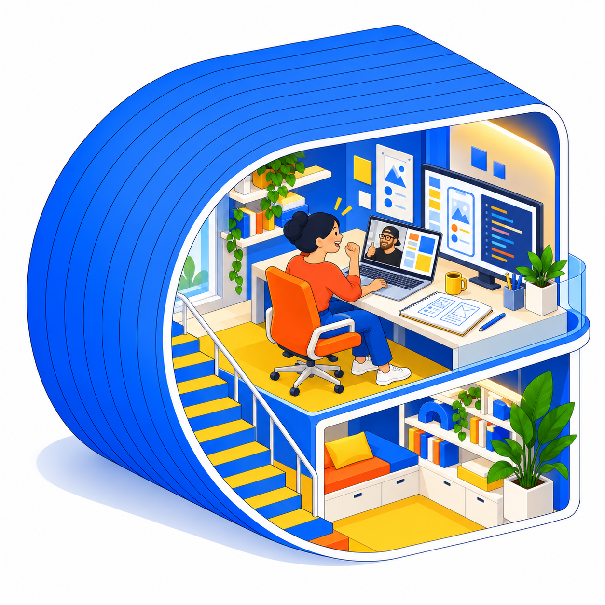

FOR HIGH SCHOOL & COLLEGE STUDENTS
Curious about tech?
Try it by making something real.
A low-pressure, hands-on way to explore AI, app building, coding, and prompting—before deciding whether technology is something you want to pursue.
No experience required. Parents and guardians are welcome to reach out.

A SMALL COMMITMENT. SKILLS THAT TRAVEL.
Find out if building with tech feels like your thing.
You don’t have to choose a major or have a career plan. Bring a curiosity or a small idea, and we’ll try building something with AI together.
Along the way, you can learn how to break down a problem, ask better questions, work with AI tools, understand basic code, and test what you make. Those skills can be useful in almost any future path.
WHAT A STUDENT CAN EXPLORE
One project can answer a lot of questions.
↗ What app building and coding actually feel like
↗ How to use AI as a creative and problem-solving tool
↗ How ideas become a simple working prototype
↗ Whether they’d like to keep exploring technology
CURIOUS ENOUGH TO TRY?
Pick a small idea. See where it goes.
Students and parents can share what they’re curious about, even if the project isn’t fully formed yet.